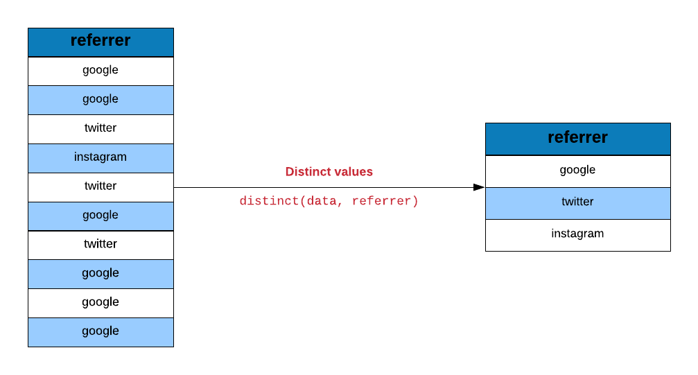
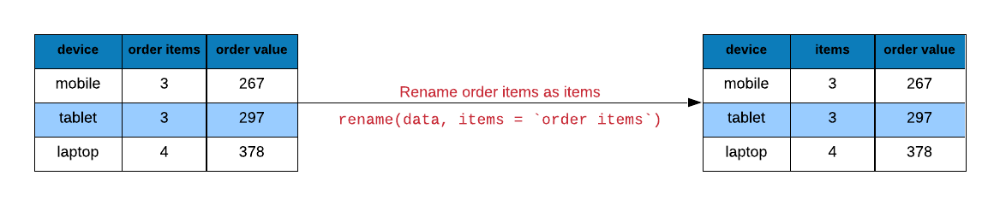
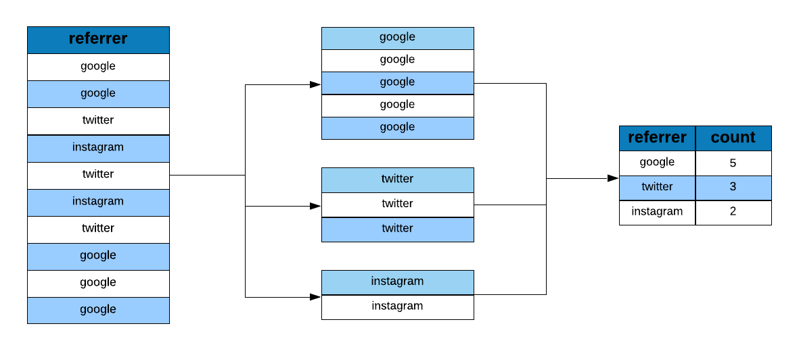
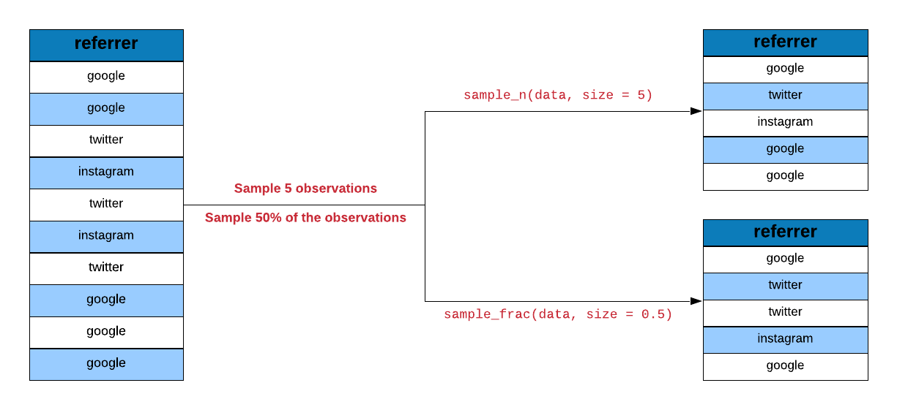
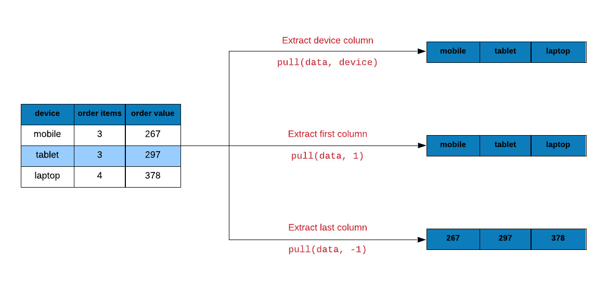
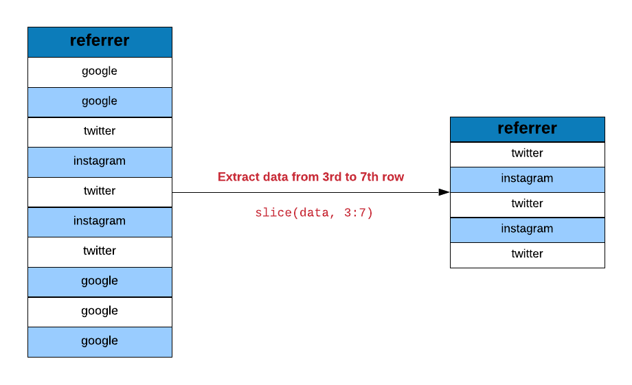

library(dplyr)
library(readr)8 dplyr Helper Functions
9 dplyr Helpers
9.1 Introduction
In this chapter, we will explore a set of helper functions in order to:
- extract unique rows
- rename columns
- sample data
- extract columns
- slice rows
- arrange rows
- compare tables
- extract/mutate data using predicate functions
- count observations for different levels of a variable
We will use the following R packages:
9.2 Case Study
Let us look at a case study (e-commerce data) and see how we can use dplyr helper functions to answer questions we have about and to modify/transform the underlying data set.
9.2.1 Data
ecom <-
read_csv('https://raw.githubusercontent.com/rsquaredacademy/datasets/master/web.csv',
col_types = cols_only(device = col_factor(levels = c("laptop", "tablet", "mobile")),
referrer = col_factor(levels = c("bing", "direct", "social", "yahoo", "google")),
purchase = col_logical(), bouncers = col_logical(), duration = col_double(),
n_visit = col_double(), n_pages = col_double()
)
)
ecom# A tibble: 1,000 × 7
referrer device bouncers n_visit n_pages duration purchase
<fct> <fct> <lgl> <dbl> <dbl> <dbl> <lgl>
1 google laptop TRUE 10 1 693 FALSE
2 yahoo tablet TRUE 9 1 459 FALSE
3 direct laptop TRUE 0 1 996 FALSE
4 bing tablet FALSE 3 18 468 TRUE
5 yahoo mobile TRUE 9 1 955 FALSE
6 yahoo laptop FALSE 5 5 135 FALSE
7 yahoo mobile TRUE 10 1 75 FALSE
8 direct mobile TRUE 10 1 908 FALSE
9 bing mobile FALSE 3 19 209 FALSE
10 google mobile TRUE 6 1 208 FALSE
# ℹ 990 more rows9.2.2 Data Dictionary
- referrer: referrer website/search engine
- device: device used to visit the website
- bouncers: whether a visit bounced (exited from landing page)
- duration: time spent on the website (in seconds)
- purchase: whether visitor purchased
- n_visit: number of visits
- n_pages: number of pages visited/browsed
9.3 Data Sanitization
Let us ensure that the data is sanitized by checking the sources of traffic and devices used to visit the site. We will use distinct to examine the values in the referrer column

distinct(ecom, referrer)# A tibble: 5 × 1
referrer
<fct>
1 google
2 yahoo
3 direct
4 bing
5 social and the device column as well.
distinct(ecom, device)# A tibble: 3 × 1
device
<fct>
1 laptop
2 tablet
3 mobile9.4 Rename Columns
Columns can be renamed using rename().

rename(ecom, time_on_site = duration)# A tibble: 1,000 × 7
referrer device bouncers n_visit n_pages time_on_site purchase
<fct> <fct> <lgl> <dbl> <dbl> <dbl> <lgl>
1 google laptop TRUE 10 1 693 FALSE
2 yahoo tablet TRUE 9 1 459 FALSE
3 direct laptop TRUE 0 1 996 FALSE
4 bing tablet FALSE 3 18 468 TRUE
5 yahoo mobile TRUE 9 1 955 FALSE
6 yahoo laptop FALSE 5 5 135 FALSE
7 yahoo mobile TRUE 10 1 75 FALSE
8 direct mobile TRUE 10 1 908 FALSE
9 bing mobile FALSE 3 19 209 FALSE
10 google mobile TRUE 6 1 208 FALSE
# ℹ 990 more rows9.5 Data Tabulation
Let us now look at the proportion or share of visits driven by different sources of traffic.

ecom |>
group_by(referrer) |>
tally()# A tibble: 5 × 2
referrer n
<fct> <int>
1 bing 194
2 direct 191
3 social 200
4 yahoo 207
5 google 208We would also like to know the number of bouncers driven by the different sources of traffic.
ecom |>
group_by(referrer, bouncers) |>
tally()# A tibble: 10 × 3
# Groups: referrer [5]
referrer bouncers n
<fct> <lgl> <int>
1 bing FALSE 104
2 bing TRUE 90
3 direct FALSE 98
4 direct TRUE 93
5 social FALSE 93
6 social TRUE 107
7 yahoo FALSE 110
8 yahoo TRUE 97
9 google FALSE 101
10 google TRUE 107Let us look at how many conversions happen across different devices.
ecom |>
group_by(device, purchase) |>
tally() |>
filter(purchase)# A tibble: 3 × 3
# Groups: device [3]
device purchase n
<fct> <lgl> <int>
1 laptop TRUE 31
2 tablet TRUE 36
3 mobile TRUE 36Another way to extract the above information is by using count
ecom |>
count(referrer, purchase) |>
filter(purchase)# A tibble: 5 × 3
referrer purchase n
<fct> <lgl> <int>
1 bing TRUE 17
2 direct TRUE 25
3 social TRUE 20
4 yahoo TRUE 22
5 google TRUE 19The group_by() + tally() pairs above can also be written with the .by argument, which groups only for that verb and leaves the data ungrouped afterwards:
ecom |>
summarise(n = n(), .by = referrer)# A tibble: 5 × 2
referrer n
<fct> <int>
1 google 208
2 yahoo 207
3 direct 191
4 bing 194
5 social 200Two more helpers round out grouped work. summarise() must return a single row per group; when a summary needs several rows, use reframe() instead:
ecom |>
reframe(quartile = quantile(n_pages, c(0.25, 0.75)), .by = purchase)# A tibble: 4 × 2
purchase quartile
<lgl> <dbl>
1 FALSE 1
2 FALSE 8
3 TRUE 13
4 TRUE 18And pick() bundles columns into a data frame inside a verb, so a computation needing several columns at once does not repeat the data name:
ecom |>
summarise(cor = with(pick(n_pages, duration), cor(n_pages, duration)), .by = purchase)# A tibble: 2 × 2
purchase cor
<lgl> <dbl>
1 FALSE -0.251
2 TRUE 0.4299.6 Sampling Data
dplyr offers a sampling function which allows us to specify either the number or percentage of observations. slice_sample() allows sampling a specific number of observations.

slice_sample(ecom, n = 700)# A tibble: 700 × 7
referrer device bouncers n_visit n_pages duration purchase
<fct> <fct> <lgl> <dbl> <dbl> <dbl> <lgl>
1 direct tablet FALSE 1 2 48 FALSE
2 yahoo tablet TRUE 6 1 67 FALSE
3 bing mobile FALSE 10 20 560 FALSE
4 social tablet FALSE 10 10 290 TRUE
5 direct tablet TRUE 3 1 632 FALSE
6 bing mobile FALSE 0 7 196 FALSE
7 direct laptop TRUE 3 1 700 FALSE
8 bing laptop TRUE 8 1 484 FALSE
9 social laptop TRUE 2 1 806 FALSE
10 social tablet FALSE 2 12 300 TRUE
# ℹ 690 more rowsWe can combine the sampling function with grouping as shown below where we sample observations after grouping them according to the source of traffic.
slice_sample(ecom, n = 100, by = referrer)# A tibble: 500 × 7
referrer device bouncers n_visit n_pages duration purchase
<fct> <fct> <lgl> <dbl> <dbl> <dbl> <lgl>
1 google tablet FALSE 10 8 200 FALSE
2 google mobile TRUE 3 1 229 FALSE
3 google laptop TRUE 3 1 369 FALSE
4 google laptop TRUE 8 1 157 FALSE
5 google tablet TRUE 7 1 693 FALSE
6 google laptop TRUE 5 1 806 FALSE
7 google tablet FALSE 9 3 57 FALSE
8 google mobile TRUE 4 1 425 FALSE
9 google laptop FALSE 0 3 45 FALSE
10 google mobile FALSE 1 18 252 TRUE
# ℹ 490 more rowsslice_sample() with the prop argument allows sampling a specific percentage of observations.
slice_sample(ecom, prop = 0.7)# A tibble: 700 × 7
referrer device bouncers n_visit n_pages duration purchase
<fct> <fct> <lgl> <dbl> <dbl> <dbl> <lgl>
1 social tablet TRUE 10 1 81 FALSE
2 bing tablet FALSE 3 18 468 TRUE
3 yahoo mobile FALSE 4 18 468 TRUE
4 google mobile TRUE 7 1 301 FALSE
5 direct laptop FALSE 2 4 40 FALSE
6 bing mobile TRUE 9 1 638 FALSE
7 bing tablet TRUE 8 1 577 FALSE
8 yahoo mobile FALSE 7 19 494 TRUE
9 bing mobile FALSE 10 8 152 FALSE
10 direct mobile TRUE 2 1 217 FALSE
# ℹ 690 more rows9.7 Data Extraction
In the first chapter, we had observed that dplyr verbs always returned a tibble. What if you want to extract a specific column or a bunch of rows but not as a tibble?
Use pull to extract columns either by name or position. It will return a vector. In the below example, we extract the device column as a vector. I am using head in addition to limit the output printed.
9.7.1 Sample Data
ecom_mini <- slice_sample(ecom, n = 10)
pull(ecom_mini, device) [1] mobile laptop laptop laptop mobile tablet mobile laptop tablet mobile
Levels: laptop tablet mobileLet us extract the first column from ecom using column position instead of name.
pull(ecom_mini, 1) [1] bing social direct direct social google bing direct yahoo yahoo
Levels: bing direct social yahoo googleYou can use - before the column position to indicate the position in reverse. The below example extracts data from the last column.
pull(ecom_mini, -1) [1] FALSE FALSE FALSE FALSE FALSE FALSE FALSE FALSE FALSE FALSELet us now look at extracting rows using slice(). In the below example, we extract data starting from the 5th row and upto the 15th row.

slice(ecom, 5:15)# A tibble: 11 × 7
referrer device bouncers n_visit n_pages duration purchase
<fct> <fct> <lgl> <dbl> <dbl> <dbl> <lgl>
1 yahoo mobile TRUE 9 1 955 FALSE
2 yahoo laptop FALSE 5 5 135 FALSE
3 yahoo mobile TRUE 10 1 75 FALSE
4 direct mobile TRUE 10 1 908 FALSE
5 bing mobile FALSE 3 19 209 FALSE
6 google mobile TRUE 6 1 208 FALSE
7 direct laptop TRUE 9 1 738 FALSE
8 direct tablet FALSE 6 12 132 FALSE
9 direct mobile FALSE 9 14 406 TRUE
10 yahoo tablet FALSE 5 8 80 FALSE
11 yahoo mobile FALSE 7 1 19 FALSE Use n() inside slice() to extract the last row.
slice(ecom, n())# A tibble: 1 × 7
referrer device bouncers n_visit n_pages duration purchase
<fct> <fct> <lgl> <dbl> <dbl> <dbl> <lgl>
1 google mobile TRUE 9 1 269 FALSE 9.8 Between
between() allows us to test if the values in a column lie between two specific values. In the below example, we check how many visits browsed pages between 5 and 15.
ecom_sample <- slice_sample(ecom, n = 30)
ecom_sample |>
pull(n_pages) |>
between(5, 15) [1] TRUE FALSE FALSE TRUE FALSE TRUE FALSE FALSE FALSE TRUE FALSE FALSE
[13] TRUE FALSE FALSE FALSE FALSE TRUE FALSE TRUE FALSE TRUE FALSE FALSE
[25] TRUE FALSE FALSE FALSE FALSE FALSE9.9 Case When
case_when() is an alternative to if else. It allows us to lay down the conditions clearly and makes the code more readable. In the below example, we create a new column repeat_visit from n_visit (the number of previous visits).
ecom |>
mutate(
repeat_visit = case_when(
n_visit > 0 ~ TRUE,
TRUE ~ FALSE
)
) |>
select(n_visit, repeat_visit) # A tibble: 1,000 × 2
n_visit repeat_visit
<dbl> <lgl>
1 10 TRUE
2 9 TRUE
3 0 FALSE
4 3 TRUE
5 9 TRUE
6 5 TRUE
7 10 TRUE
8 10 TRUE
9 3 TRUE
10 6 TRUE
# ℹ 990 more rowsTry it live
TipTry it in your browser
Edit the code below and press Run. It executes entirely in your browser via WebR — no R installation needed. The runtime downloads once, on this page only.